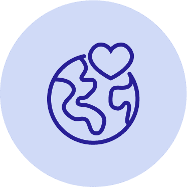
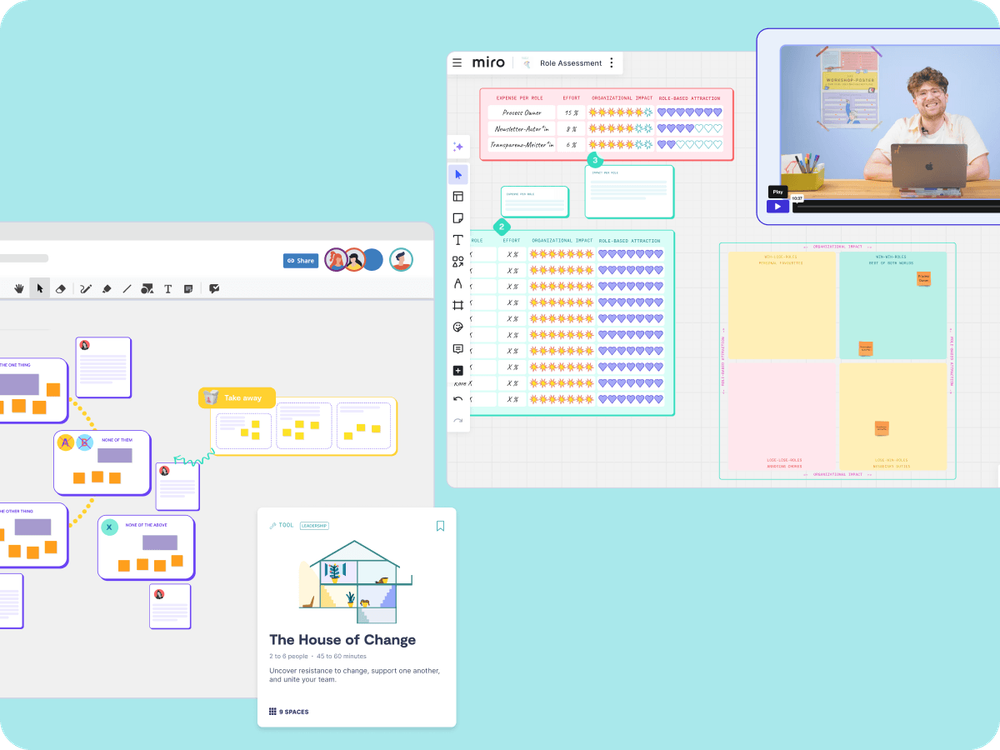

Business
5+ seats
Access for multiple team members within a tailored plan
With 85+ tools and workshops, 9 Spaces supports non-profit organisations in making impact visible, strengthening teams, and shaping a sustainable future.

Learn how to increase your impact as a non-profit organisation with 9 Spaces.
Non-profits and NGOs face major challenges from limited resources to effective collaboration. We support you with:

💰 Limited financial resources: using resources efficiently is crucial to delivering successful projects and achieving impact.
📉 The use of digital tools still has room for improvement, even though they could significantly strengthen efficiency and collaboration.
🤝 Volunteer engagement is high but long-term retention continues to be a major challenge.
⚙️ Administrative effort as a barrier: inefficient processes take away valuable time from actual project work.
Access for multiple team members within a tailored plan
Our team is happy to help you find the perfect solution for you.